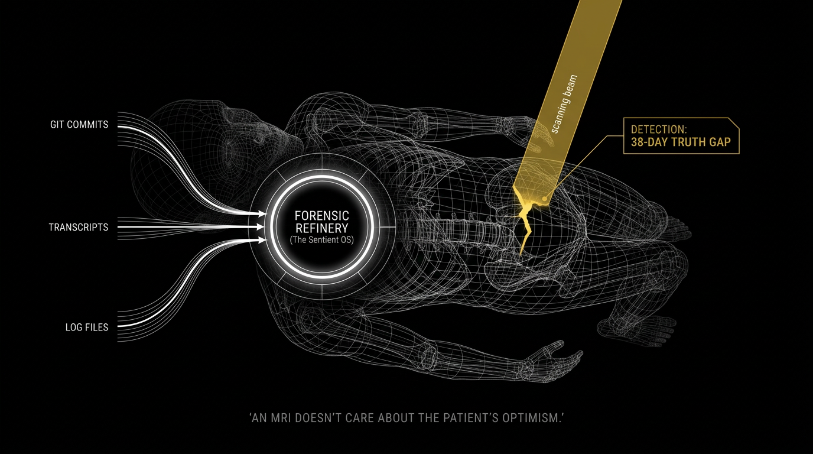

The clinical visual companion to the 27:27 movie. A methodology that treats your capital as a "Digital Body" requiring a clinical MRI, not a verbal status report.

"An MRI doesn't care about the patient's optimism."
We don't "interview" your team. We ingest the Digital Exhaust—raw audio, email threads, and Git commits—to adjudicate reality in the background.
This is a clinical mission. We decommission the Admin Tax by working behind the scenes. We don't take your team's time; we give you their intervention window back.
"We are taking a sample of the actual work to test for the 'cancer' of failure."
"The social filter of a PM often masks the Truth Gap. Our engine has no social filter."
Previous Asset
← 01. Battle CardNext Evidence Asset
03. RRI'25 Case Evidence →